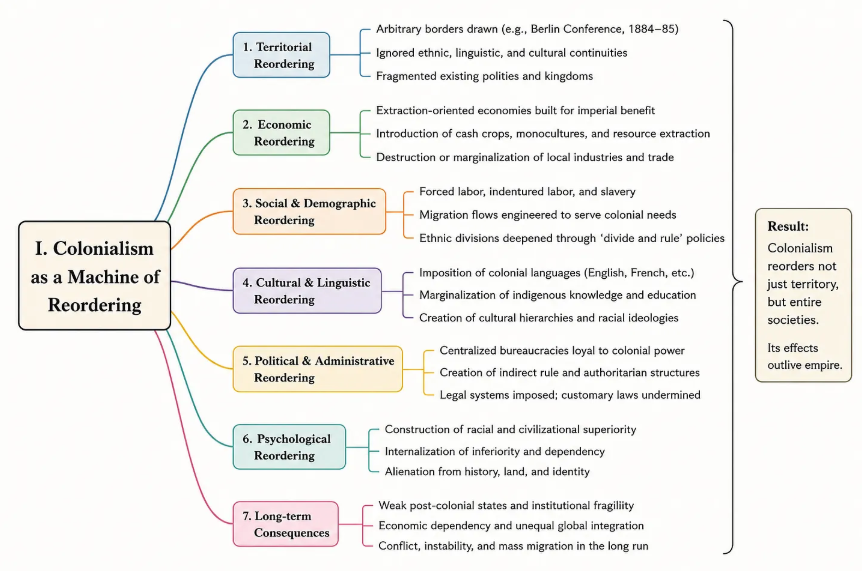
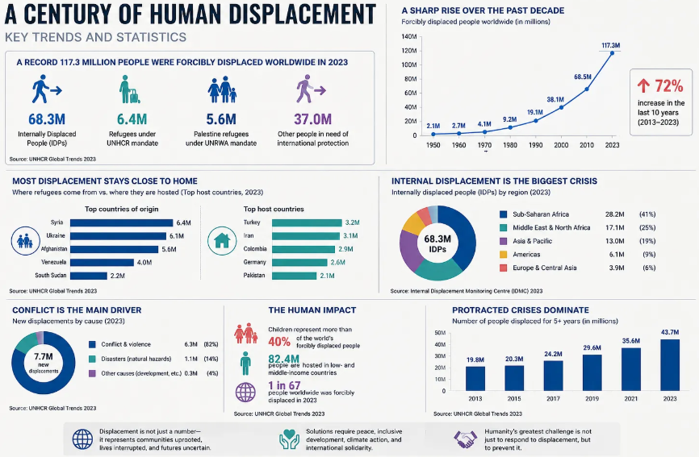
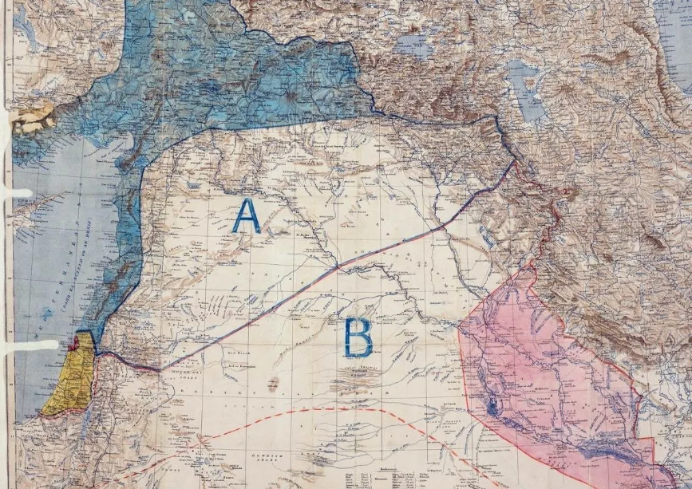
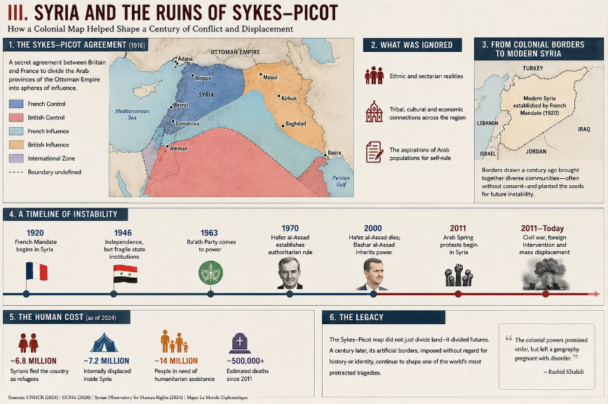
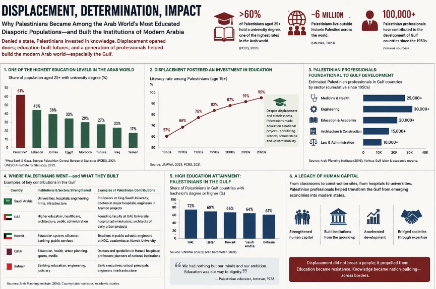
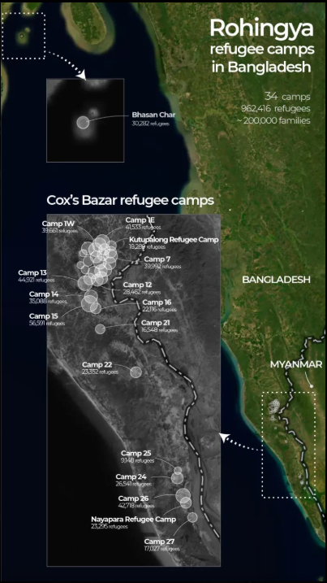
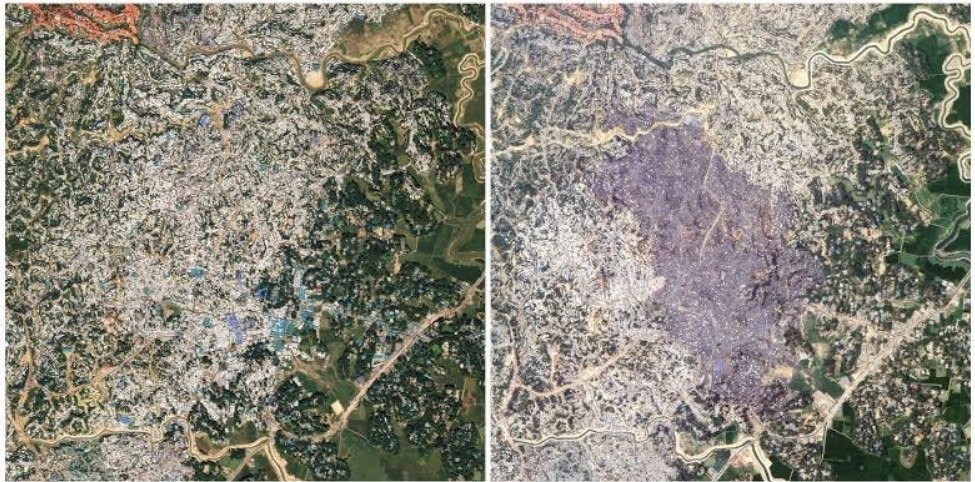

The Empire Comes Home.
“Today’s problems come from yesterday’s solutions”
— Peter Senge, The Fifth Discipline
There are epochs in history that end formally and yet continue to persist organically, most visibly of all, through the movement of human beings.
Empire is one such phenomenon.
The great European empires unmistakably receded across the twentieth century:
· British: from India and Palestine
· French: from Algeria and Indochina
· Belgians: from the Congo
· Portuguese: from Angola and Mozambique
The lexicon of international relations underwent a dignified transformation, evolving from the archaic language of dominion to the discourse of sovereignty, and from the subjugating notion of colony to the conception of the nation-state. This tectonic shift was emblematic of a deeper moral and political awakening, one that elevated the agency of formerly subjugated peoples, and enshrined the ideals of autonomy, legitimacy, and collective identity at the centre of global order.
The routes once traversed by extractive capital are now being retraced in reverse by migrants, asylum seekers, students, labourers, and the displaced. The imperial centre, which once extended its reach centrifugally across the world, now increasingly finds the world arriving at its own threshold, compelling it to confront the very entanglements it once externalised.
This is the stubborn persistence of geopolitical continuity, wherein the circuits of empire remain alive in altered form. Modern migration patterns are not random demographic accidents produced ex nihilo by globalisation. They are, to a remarkable degree, the cartographic residue of the empires themselves.
These are not random migratory patterns but historical persistence: Algerians to France, Indians, Pakistanis and Bangladeshis to Britain, Congolese to Belgium, Angolans to Portugal and the Surinamese to the Netherlands. The routes of contemporary migration frequently follow the old channels of imperial commerce and administration, revealing how imperial geopolitics persist long after the formal empire has receded.

I. Colonialism as a Machine for Reordering
Colonialism did not merely annex territory; it restructured the very conditions of social and material life.
It reconfigured:
· Linguistic hierarchies, institutionalising the coloniser’s language as the medium of law, administration, and elite culture while marginalising indigenous forms of speech;
· Agricultural economies, converting subsistence and diverse land-use patterns into export-oriented, cash-crop systems tied to global markets;
· Ethnic balances, reorganising social relations through racial and tribal categorizations that entrenched new forms of domination and exclusion;
· Labour systems, imposing coercive, low-waged, and often racialised regimes of work that reorganised pre-existing modes of production;
· Taxation structures, redesigning fiscal mechanisms to extract surplus and redirect it toward imperial centres;
· Maritime trade, integrating colonial territories into a hierarchy of ports and shipping routes that privileged metropolitan commerce;
· And, most consequential in the long term, borders: artificial territorial lines that codified exclusion and laid the foundations for persistent geopolitical conflict.
The modern map of Africa remains amongst the most extraordinary examples of geopolitical abstraction in human history. At the 1884–85 Berlin Conference, European powers partitioned territories with astonishing indifference toward pre-existing civilisational, ethnic, or linguistic continuities. The resulting order formalised arbitrary lines on the ground, often bisecting polities, and substituted them with a schematic grid of colonial jurisdictions. This abstract territorial logic continues to shape the region’s political boundaries and patterns of conflict.
A Somali clan could suddenly find itself divided between five jurisdictions. A Tuareg trading network could be fractured across artificial frontiers. A pastoral route older than most European nation-states could become an international border overnight.
The consequences were not immediate alone; they were intergenerational. The postcolonial state inherited borders that often possessed administrative rigidity but little organic legitimacy.
This matters because migration crises rarely emerge from singular catastrophes. They emerge from layered fragilities accumulated over centuries.
The Lebanese-American historian Edward Said once remarked that imperialism “consolidated the mixture of cultures and identities on a global scale.” That observation has acquired almost prophetic resonance in the twenty-first century.

II. The Century of Human Displacement
The last twenty-five years have witnessed displacement on a scale almost without precedent in the post-war era.
The scale of displacement is staggering:
· Current international data indicates that more than 120 million people worldwide are forcibly displaced by conflict, persecution, or systemic instability.
· In Syria, over 6 million people have fled the country since 2011, making this one of the largest refugee outflows of the twenty-first century.
· In Bangladesh, nearly 1 million Rohingya refugees are now concentrated in large, densely populated camps, following the mass exodus from Myanmar that began in 2017.
· South Sudan has produced one of Africa’s most severe displacement crises within a few years of gaining independence, generating millions of refugees and internally displaced persons.
· The Mediterranean has emerged as one of the deadliest migration corridors in the world, with thousands of lives lost in dangerous sea crossings each year.
Despite these figures, public imagination remains highly selective: migration is often visualised through images of dinghies arriving on European shores, even though the overwhelming majority of refugees remain in, or close to, their countries of origin, primarily in low- and middle-income host states.
Syrians fled to Turkey, Jordan, and Lebanon. Rohingya refugees fled primarily into Bangladesh. South Sudanese refugees crossed into Uganda, Ethiopia, Kenya, and Sudan. Afghans sought refuge in Pakistan and Iran.
The spatial distribution of refuge is predominantly regional, with the vast majority of displaced populations hosted in or adjacent to their countries of origin. By contrast, the political discourse and media-driven theatre surrounding migration are heavily concentrated in Western states, which often dominate the normative framing and policy-making despite receiving only a small share of global refugees.

III. Syria and the Ruins of Sykes–Picot
Understanding modern Syria merely as a civil war equates to misunderstanding the longue durée beneath it.
The contemporary Syrian state emerged from the dismemberment of the Ottoman Empire after the First World War. The borders themselves were shaped by the infamous Sykes–Picot arrangement between Britain and France, an agreement that divided the Arab East into spheres of influence.

The Syrian crisis, therefore, did not originate in 2011. 2011 was merely the detonation point, and the moment when long-deferred tensions erupted into open violence.
Beneath, it already existed:
· Drought-induced agricultural crisis,
· Urban overcrowding and infrastructural strain,
· Authoritarian patterns of centralisation and repression,
· Deep-seated sectarian anxieties and identity-based cleavages,
· Widespread youth unemployment and blocked social mobility,
· And intensifying geopolitical rivalry among regional and global powers.
One often-overlooked fact is that Syria experienced one of the worst droughts in its recorded history between 2006 and 2010. Rural agricultural communities collapsed en masse, driving hundreds of thousands toward already strained urban centres before the uprising even began.
Climate stress did not “cause” the war, but it intensified existing political, economic, and social fault lines devastatingly. When the conflict metastasized, the resulting displacement transformed the demography of the entire Mediterranean Basin. Germany alone received over a million asylum seekers during the peak years of the crisis, marking one of the largest and most concentrated episodes of refugee reception in recent European history.
Meanwhile, Turkey became the world’s largest individual refugee-hosting country, absorbing millions of displaced Syrians and other nationalities; Lebanon’s population composition shifted largely, with refugees at times constituting a substantial share of its total population; and Greece was transformed into Europe’s symbolic frontier, site of first arrival and triage for numerous migrants and asylum seekers.
The Mediterranean thereby ceased to be a sea; it was reconstituted as a psychological and political border, marking the perceived threshold between “inside” and “outside” in the European imagination.

IV. Palestinian Exile
No refugee condition in the modern world has acquired the strange permanence of the Palestinian diaspora.
Displacement became hereditary in the case of Palestine and entire generations were born:
· In camps,
· In exile,
· In juridical ambiguity,
· Or in suspended sovereignty.
The Palestinian question cannot be understood outside the broader dissolution of Ottoman rule and the British Mandate system that followed. The British Empire, having promised contradictory political futures to different constituencies during and after the First World War, left behind a geopolitical configuration saturated with irresolution.
Today, large Palestinian populations remain distributed across Jordan, Lebanon, Syria, the Gulf, Europe, and North America.
One of the great ironies of modern history is that Palestinians became among the Arab world’s most educated diasporic populations precisely because displacement forced transnational mobility. Palestinian teachers, engineers, doctors, and academics became foundational to the development of Gulf institutions throughout the twentieth century.

Exile, paradoxically, produced dispersion and influence simultaneously.
V. The Rohingya Crisis
The Rohingya crisis is among the clearest examples of how citizenship itself can become an instrument of erasure.
Under British colonial rule, movement between Bengal and Burma intensified considerably and labour mobility within the empire was encouraged because the empire required fluid labour pools. After independence, these same movements were retrospectively reframed through ethnonationalist narratives.
A community that had existed for generations was increasingly categorised as alien. The Rohingya were gradually stripped:
· Of recognition,
· Of movement,
· Of political rights,
· And eventually of security itself.
By 2017, mass expulsions drove hundreds of thousands into Bangladesh. The camps at Cox’s Bazar became so vast they were visible from satellite imagery.


One particularly chilling aspect of the Rohingya crisis is its bureaucratic nature. Statelessness for them was administrative annihilation. Modern states possess an extraordinary power: the ability to render a population legally unreal.
VI. North Africa and Europe’s Externalised Border
North Africa now occupies one of the most geopolitically consequential positions in global migration. Countries such as Tunisia, Morocco, Libya, and Mauritania have effectively become Europe’s outsourced frontier.
This arrangement is frequently described by migration scholars as the externalisation of borders. Rather than preventing migration at the European coastline itself, European states increasingly fund transit countries to intercept migrants beforehand.
The result is a peculiar geopolitical inversion: the border of Europe now often exists outside Europe.
Tunisia’s economic deterioration transformed it into a major Mediterranean departure point toward Italy. Mauritania, once peripheral to migration discourse, became strategically central after Atlantic routes toward the Canary Islands intensified. Meanwhile Morocco occupies a uniquely paradoxical role: simultaneously African, Arab, Mediterranean, Atlantic, and historically intertwined with both France and Spain.
Migration routes are astonishingly adaptive. When Libya becomes unstable, patrols intensify near Greece, or Italy tightens surveillance, the routes simply mutate geographically. Borders rarely stop migration. More often, they redirect it.
VII. South Sudan
South Sudan’s tragedy is almost Shakespearean in its historical irony. After decades of brutal conflict, independence arrived in 2011 amid immense international optimism. Yet within two years, the new state descended into civil war.
Colonial border logic once again mattered intensely. The postcolonial African state often inherited militarised governance structures, externally drawn frontiers, uneven development, and ethnocentric political competition.
South Sudan rapidly became one of the world’s largest displacement crises. Uganda alone hosted over a million South Sudanese refugees. Yet this crisis received only a fraction of the media attention devoted to Mediterranean migration into Europe, revealing an asymmetry in global visibility. A refugee crossing into Europe becomes international news, but a refugee remaining within Africa often becomes statistical.
VIII. The Mediterranean
The so-called migration crisis transformed European politics because it affected something indifferent to economic calculations: it unsettled a long-established historical self-perception.
For centuries, Europe existed as exporter, conqueror, administrator, and centre. The twenty-first century confronted it increasingly with the inverse condition of arrival.
The debates that followed were rarely about migration as such. They became debates about identity and belonging, sovereignty and external borders, secularism and religious pluralism, demography and generational change, assimilation and multicultural coexistence, welfare and redistribution, and the politics of historical memory.
One cannot understand contemporary European politics without grasping migration as the central emotional axis around which modern anxieties increasingly orbit.
IX. The Imperial Boomerang
The Martinican thinker Aimé Césaire wrote in Discourse on Colonialism that the methods perfected in the colonies eventually return to Europe itself. This idea later became known as the imperial boomerang.
Empires do not only transform colonies; they transform the imperial centre too. The modern world increasingly reflects this boomerang effect: militarised borders, biometric surveillance, detention systems, securitised citizenship, and racialised political discourse.
The afterlife of empire is therefore not confined to former colonies. It resides within the metropole itself.
X. When Viewed in Totality
Migration is often spoken of as if it were an interruption of all societal orders, a rupture in the otherwise stable fabric of the nation-state. In reality, it may be less a breakdown than a revelation: a deeper, older order that has been centuries in the making.
The Syrian refugee crossing the Aegean, the Rohingya family in Cox’s Bazar, the Sudanese migrant in Tunisia, the Tunisian himself in Spain, the Palestinian exiles in Jordan, the Senegalese worker in Marseille, and the Congolese student in Brussels are not atomised episodes of individual desperation. They are interwoven sections of a single global condition, connected by the stubborn structure of empire.
Colonialism globalised the world asymmetrically as it integrated distant societies into shared economic, administrative, and legal systems while distributing power, capital, and legitimacy with stark unevenness across them. The result is a world that is formally postcolonial in name but substantively thick with colonial continuities: in languages imposed as the medium of statecraft, trade networks oriented toward former metropoles, structures of inequality reproduced across generations, and in migration itself, which follows the very routes the empire once opened.
History, after all, precipitates into institutions. Migration, then, is not an anomaly; it is the condition through which the spectres of empire finally return into view as a moral burden that the so-called “West” can no longer outsource, repress, or ignore.